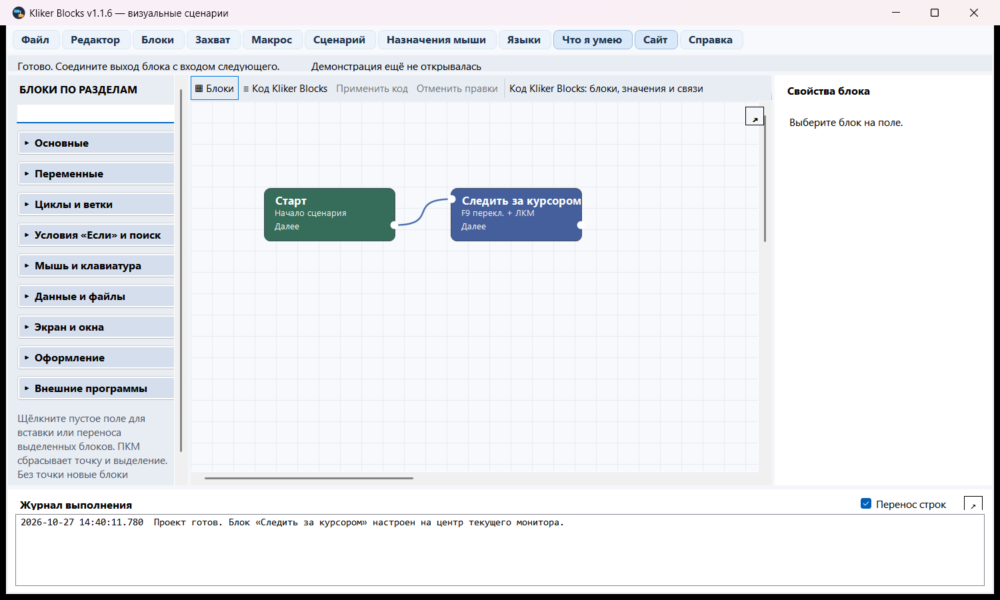
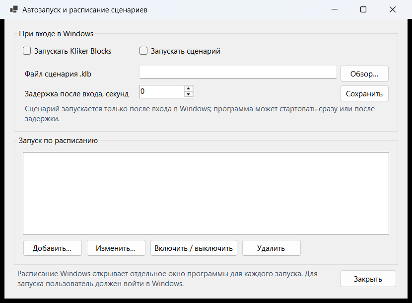
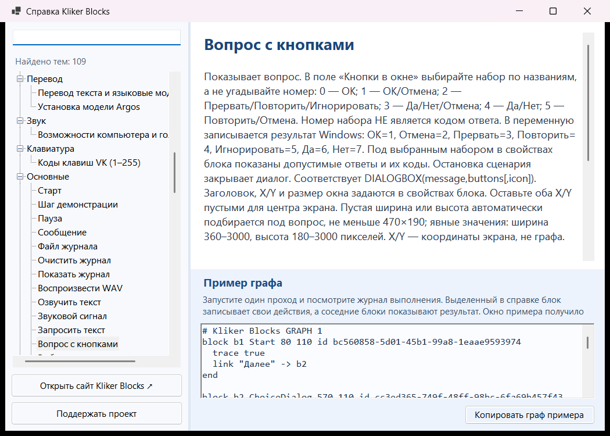
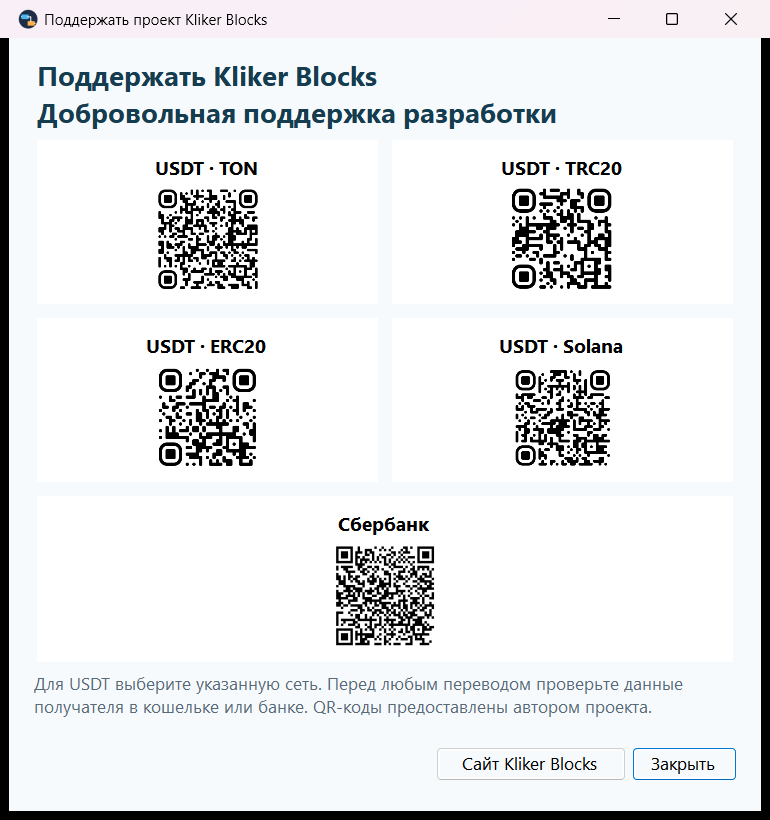

Windows x64
Рекомендуется для 64-разрядной Windows.
Соединяйте блоки, проверяйте логику и автоматизируйте действия на компьютере. Один граф можно редактировать визуально или как код Kliker Blocks.
Переносимая сборка и установщик. Русский и английский интерфейс.
ВЫПУСК 1.2.1
Установщик и переносимая сборка доступны для каждой архитектуры. Выбор языка интерфейса появится при первом запуске.
Рекомендуется для 64-разрядной Windows.
Для 32-разрядной Windows; также запускается на x64.
Версия x86 проверена на 64-разрядной Windows. На отдельной 32-разрядной машине проверка пока не проводилась.
ВОЗМОЖНОСТИ
Собирайте условия, циклы, работу с файлами, окнами и вводом в одном наглядном графе.
Переключайтесь между блоками и кодом. Настраивайте форму, заливку и точки на контуре блоков, а также вид связей со стрелкой.
Переменные, вычисления, ветвления, циклы, массивы, строки, буфер обмена, файлы и HTTP.
Окна, элементы интерфейса, мышь, клавиатура, скриншоты, анализ цвета и изображения.
Задавайте вопросы, показывайте уведомления, озвучивайте текст голосами Windows и ведите журнал действий.
ПРОГРАММА
Снимки интерфейса Kliker Blocks; редактор показан в версии 1.2.1.




СПРАВОЧНИК
Описание, поля, ограничения и готовый граф для проверки. Данные взяты из встроенной справки версии 1.2.1.
Загрузка справочника…
По этому запросу блоки не найдены.
ПЕРВЫЕ ШАГИ
Выберите установщик или переносимую сборку для Windows. При первом запуске укажите язык интерфейса.
Интерактивная демонстрация покажет, как граф управляет приложениями. Она запускается только с вашего согласия.
Добавьте «Старт», соедините блоки и запустите один проход. В справочнике каждого блока есть копируемый пример.
Лёгкая сборка не содержит Python и языковые модели. Для блоков перевода настройте внешний сервис или отдельно установите выбранные офлайн-модели. Текст отправляется в сеть только при запуске блока с настроенным сервисом.
СООБЩЕСТВО
Вопросы, сообщения об ошибках, идеи и ваши графы живут в открытых обсуждениях Kliker Blocks.
ПОДДЕРЖАТЬ ПРОЕКТ
Поддержка добровольна. Для работы программы она не требуется.
Для USDT используйте указанную сеть. Перед любым переводом проверьте данные получателя, считанные из QR-кода. QR-коды предоставлены автором проекта.
ИСТОРИЯ ВЕРСИЙ
CSV и Excel, текст PDF, очередь файлов, контрольные точки, обработка ошибок и обмен графами. Локальное OCR доступно с установленным Tesseract.
Отдельные прямые участки и радиусы изгиба у выхода и входа; связи огибают блоки. Номер версии в справке соответствует сборке.
Автозапуск выбранного сценария, расписание Windows, проверка обновлений и сохранность графов. Тонкие связи стало легче выбирать.
Поиск элементов Windows, ожидание событий, точки останова, HTTP POST и JSON; настройка точек и изгибов связей.
Блоки получили формы, заливку, окантовку и точки на контуре; связи обходят блоки и настраиваются. Для x64 и x86 доступны установщики и переносимые сборки.
Исправлены пустые координаты и размеры диалогов; добавлены автоматическая подстройка размеров, сайт, форум, ссылки из программы и добровольная поддержка проекта.